Dream Radar Guide
Introduction
This Guide will teach you to RNG manipulate for any desired Nature/IV combination when receiving Pokémon from the 3DS eShop exclusive game Pokémon Dream Radar (DR). DR is one of only a few ways to get Pokémon with their hidden ability in Generation 5. It’s also the only way to get Therian Forme Tornadus, Thundurus and Landorus without hacking since the Therian Formes cannot be traded but you need a Landorus Therian to be able to obtain the Reveal Glass from an old man at Abundant Shrine.
Prerequisites
Guides:
- PokéFinder Guide: This will help you set up and use PokéFinder.
- EonTimer Guide: This will help you determine what EonTimer settings you should use.
Tools:
Pokefinder by AdmiralFishEonTimer by DasAmpharos
Hardware:
- a 3DS family console with Pokémon Dream Radar
- either Pokémon Black 2 or Pokémon White 2
In-game:
In DR you need to have caught the Pokémon you wish to RNG (tips on how to progress faster in DR are in the next section). PokéFinder only allows you to search to RNG for 1 Pokémon at a time, but you can still RNG if you have multiple Pokémon caught and ready for transfer. It’s therefore best to never try and transfer 2 or more of the legendaries as that way you’ll only be able to RNG one of them but more on that later. In BW2 you only need to have gotten the Pokédex to be able to receive stuff from Dream Radar. Something to note here is that the earlier during the story you receive a Pokémon from DR, the lower its level is going to be. The Level of the Pokémon you receive depends on the number of badges you have in-game.
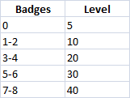This gives you the opportunity to receive legal level 5 Legendaries, such as the before mentioned Tornadus, Thundurus and Landorus, which is neat. You can also get all Generation 4 cover Legendaries in Dialga, Palkia, Giratina, Ho-Oh and Lugia if you insert the respective Gen 4 game and start Dream Radar. Professor Burnet will inform you about a special extension that corresponds with the Pokémon.
WARNING: You only get 1 shot at each Legendary Pokémon per save file of both BW2 and DR meaning if you receive a Legendary (receiving them from “NINTENDO 3DS LINK” is the point of no return) and it does not have the Nature and IVs you were going for you need to reset your BW2 save file and redownload DR if you wish to try again. A redownload is the only way to delete previous save data for DR (without CFW).
Tips for faster progress in Dream Radar
To get to catch your desired Pokémon faster there’s a few things you should do whilst playing through DR.
- Pink dream clouds constantly change in size. Depending on how big the cloud is when you shoot it, it will dish out between 3-5 dream orbs; the bigger the cloud, the more orbs you get. It’s important that you always try to shoot clouds when they’re big because if you shoot all 4 or all 5 dream orbs the last one you shoot will split up into 3 more dream orbs (If the cloud initially only yields 3 dream orbs, the last shot of the 3 will not split into 3 more orbs). This chain can continue up to 5 times for a maximum of 20 dream orbs per cloud. The orbs of a cloud will start despawning faster after every chain so be quick for the maximum yield of dream orbs!
- Always spend your earned dream orbs on increasing the maximum cloud capacity. You should have the cloud capacity on maximum level before you use orbs to buy anything else. This will give you more dream clouds = more dream orbs = more progress.
- To unlock the Forces of Nature you don’t need to actually have the respective amount of dream orbs required in your “bank” but the game counts how many dream orbs you’ve received overall since you caught your most recent of the trio, no matter how many you spend in the meantime. Tornadus requires 400 dream orbs to unlock, Thundurus 1000 more dream orbs after having caught Tornadus and Landorus requires 1600 additional orbs after having caught Thundurus.
- The regular Pokémon that can spawn depend on what dream orb color you shot the most during your last session. To not waste any dream orbs on trying to change the encounters you can get, I recommend doing a full session ignoring colors first. Then you’ll start a new session with just 1 dream cloud and patiently wait for the orbs to turn into whatever color you need for your target Pokémon before shooting them. That way you can get the color you want for your next full session. Info on what Pokémon need which orb colors: Pokémon Dream Radar - Bulbapedia, the community-driven Pokémon encyclopedia

Finding a target seed
Now that everything is prepared on the games side, we can start with the RNG manipulation part. Open PokéFinder and navigate to the Dream Radar option in the Gen 5 tab; there select the Searcher tab (southwest of the profile selection).
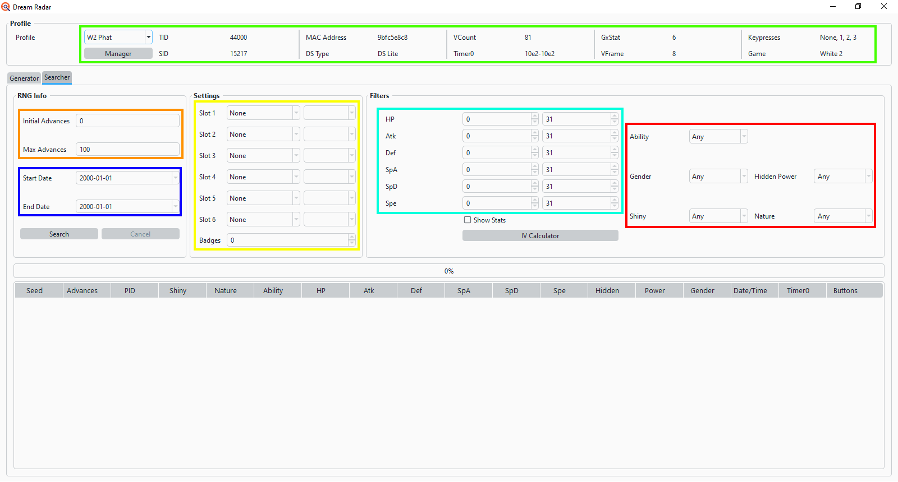Green: Select the profile of the cartridge+console combination you wish to RNG manipulate on.
Orange: Choose how many advances you’re willing to make. I recommend to put the initial advances (aka minimum number of advances) to 4 so you have at least 4 save needles to confirm that you’re on the correct seed. The maximum can really be whatever you want it to be. 50-100 Advances should be enough, especially if you have PokéFinder search through multiple weeks in the blue field.
Blue: Choose the date(s) you would like to have as the met date for your Pokémon. Larger search range = more likely to find specific IV spreads.
Yellow: Select what Pokémon are in which slots. The amount of Badges you have doesn’t have any impact on the RNG so it doesn’t matter what you put into that field (idk why it exists lol). There is a few things to watch out for here though:
- If you wish to RNG a Legendary it will always occupy slot 1 no matter how many other regular Pokémon you caught before that.
- If you have multiple Legendaries caught already in DR and therefore only have the option to transfer them all at once you can still only RNG 1 of them and may not be able to choose which. PokéFinder doesn’t allow you to select a Therian Legendary to be in any slot other than slot 1. So should you Transfer more than 1 Therian at a time you can only try to RNG the one you caught first. An easy alternative would be to simply uninstall DR and then reinstall it from the eShop right after to erase the games save file. Despite the eShop not allowing for any new downloads you can still redownload games you previously had.
- If you are only transferring 1 or 0 Therians anyways and the rest are the Gen 4 cover Legends you can of course do that but will still only be able to RNG manipulate 1 of them. If you Transfer multiple Pokémon at the same time you always only select the slots up to the target Pokémon. In this example I transferred a Landorus, a Riolu and a Togepi in one go. Landorus will occupy slot 1, Riolu slot 2 and Togepi slot 3 but since my target is Landorus in slot 1 I simply ignore Riolu and Togepi and tell PokéFinder that those slots are empty. If my target would be Riolu I’d tell PokéFinder that slot 1 is Landorus and slot 2 Riolu and if the target were Togepi I’d input slot 1s Landorus, slot 2s Riolu AND slot 3s Togepi into PokéFinder.
Cyan: Choose the IV range you wish to go for. You will be able to find perfect IV seeds without much trouble.
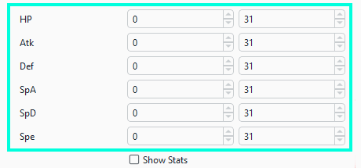Red: Select what Hidden Power type and nature you want. DR Pokémon always have their Hidden Ability, are shiny locked and are female most of the time (it is not known what determines their gender) so leave those 3 options at “Any”.
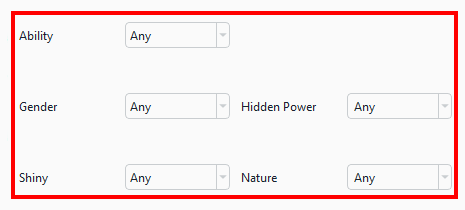After you’ve decided on what IVs, nature and Hidden Power you want, chosen the date and frame ranges to search through and input the slots you can press the search button. Depending on how many days you told Pokéfinder to search through and how specific your IV and nature requirements are it may take a bit of time to complete.

Once the search has found a seed you want to go for you can cancel the search if you’d like or let it finish if you want to have more options for e.g. different dates or target seconds that make each reset faster when you didn’t hit the Timer0 you wanted. If you searched but found nothing, increase either the date range, frame range or both. In this example I searched for a standard Gen 5 OU smogon set with a Naive nature and HP Ice for Landorus.
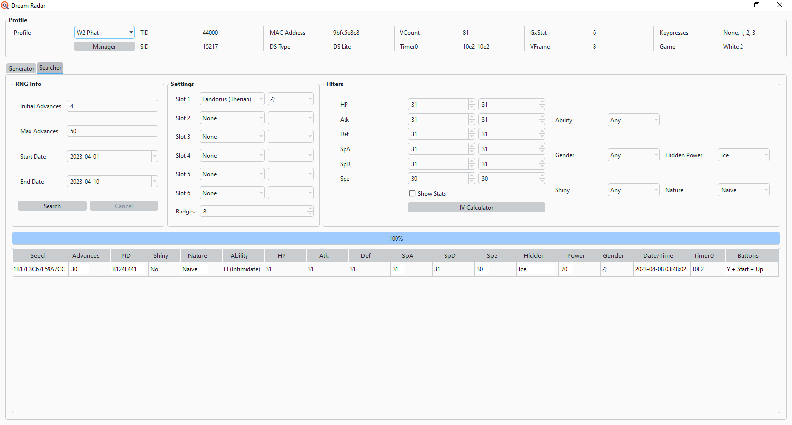Now I just left-click on the seed I want to aim for (here 1B17E3C67F59A7CC) and copy it (e.g. via pressing ctrl+c when the seed is selected on windows). Then you take your seed to the Generator tab and paste it into the Seed field. Before we hit search we have to input the slots again like we did in the Search tab. As for the advances you can just leave them at the default 0 to 100 but since my specific seed requires me to do 30 advances, I will put a 30 into the “Max Advances” field. Then I press Search and PokéFinder will show me the advances.
Final Preparations
Before you can RNG manipulate the Pokémon you of course need to transfer them from DR into your game. Don’t actually collect them in-game yet though. Open EonTimer and its Gen 5 tab. Here you input the seconds of the seed you wish to hit.
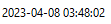You can always double check the date and time of your target seed by switching over to the Searcher tab in PokéFinder. My target seconds are 2, therefore I put 2 seconds into EonTimers target seconds field.
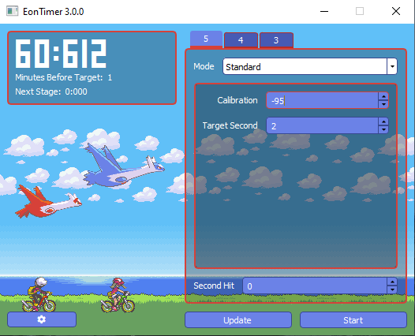Now start up your console, go to the system settings and change the date of your console to your target seeds’ (picture depicts DS/Lite). Next go to the time settings and also change that one to your target seeds but don’t confirm it yet. Here’s also one more thing to watch out for: have a look at EonTimer; in the top left you can see how many seconds it will take for the timer to count down (here 60:612) but below that there is another piece of info. “Minutes before Target:” will tell you whether or not you have to subtract anything from your target time. For this seed with 2 target seconds EonTimer is telling me to put the clock to 1 minute before my target time, so I change it to 03:47 instead of my target 03:48. This is due to it being impossible to start the game within 2 seconds after changing the time so EonTimer tells us to wait another minute on top of our target seconds to be able to hit lower second values like the example seeds 2.
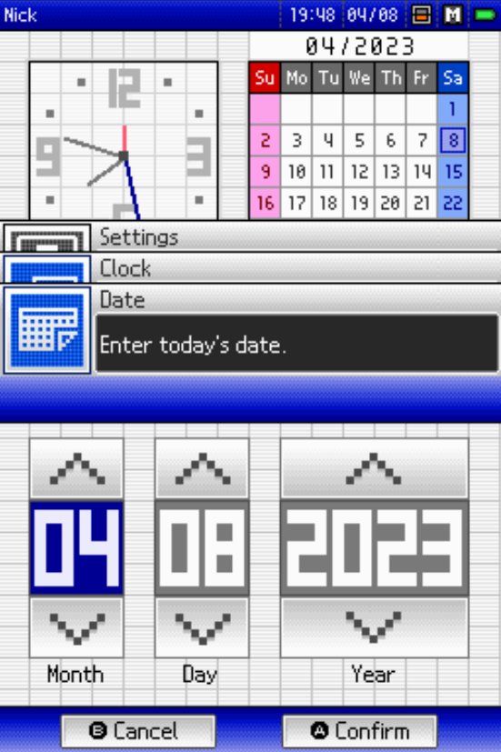 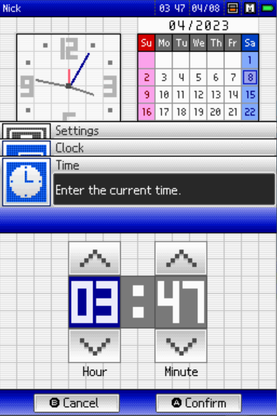As the last bit of preparation, look if your target seed has any buttons you need to press during startup. The example target requires me to press the Y and Start buttons and Up on the D-pad.
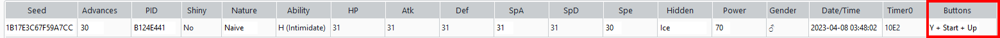 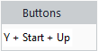Hitting the target seed and target advance
We start by pressing the Start button in EonTimer and simultaneously confirming the time in our console. Next we turn the DS off and then back on again (if you’re on a DSi, 3DS or 2DS you can also just go back to the home menu from the settings). Now we wait for EonTimer to count down to 0 whilst hovering over the “start game” option; the timer will beep 6 times (unless you changed the amount of beeps) and we need to start the game together with the sound of the 6th beep. Directly after pressing A to start the game we have to press and hold the button presses provided our target seed has any (don’t hold any buttons if your target has none). We can release the buttons as soon as we see the star appear on the top screen.
Next we continue on to the games main menu, navigate to UNOVA LINK -> KEY SYSTEM -> SEND AND RECEIVE KEYS and wait on this screen before continuing.
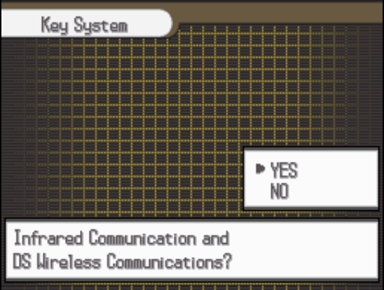(Be sure to have the Generator tab in PokéFinder open on your Computer to see at least the first 4 advances)
Each time we launch infrared communications and DS wireless communications for the send/receive keys feature, the game switches to the next advance starting at 0. Each advance has a Needle corresponding to it and this Needle is the starting position of the save spinner that pops up in the bottom right of the top screen immediately after we confirm to start sending/receiving keys by pressing A on the last shown screen.
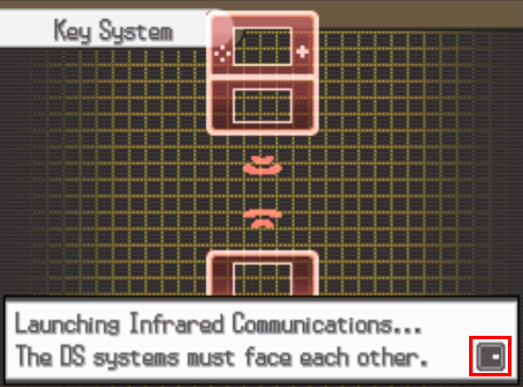
(The starting position of the needle in this GIF is → for example) Now let’s have a look at whether or not the Needles line up with our target seeds’. For that we try to send/receive a key 4 times in a row (without actually receiving a key of course). It can be helpful to make note of the starting positions on all 4 advances for future reference.
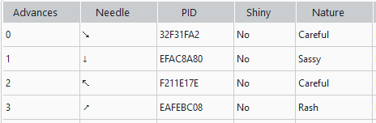My first attempts first 4 needles were → ↓ ↖ ↗
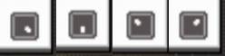which as you can see doesn’t match up with the target seeds first 4 needles (needle 1 is different). If this happens a few times that’s unfortunately only natural in BW2 due to the many different Timer0 values one can hit. If you can’t seem to get it at all after having done 10+ attempts go to the troubleshooting part at the end of this guide. One failed attempt can easily be ignored so we just try again by changing our time back to our target time (don’t forget minutes before target) and confirming it whilst starting EonTimer.
In this second attempt the first 4 needles were ↘ ↓ ↖ ↗
which perfectly match up with the needles of advances 0-3. I got lucky there and got it second try.
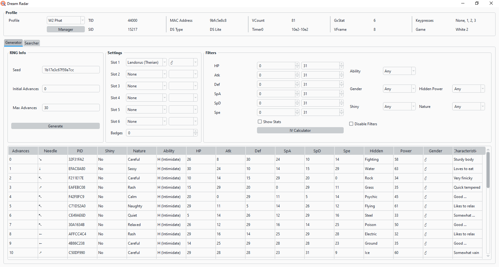Now we just continue to advance until we’re 1 advance before our target (you can left click on e.g. advance 4 in the bottom half of the Generator and then use the down arrow key to move down to the next advance every time you try to send/receive a key to advance by 1). Continue to check whether the needle starting position in-game line up with what PokéFinder says they should be. Since my target is advance 30 I stop when I see the needle of advance 29 (here ↗).
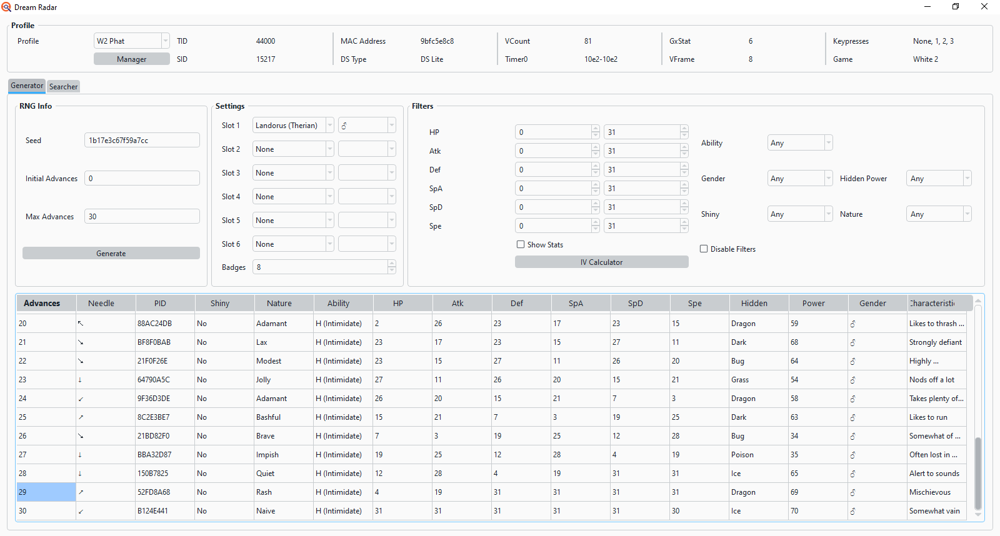At last we can finally receive our Pokémon from Dream Radar. We go back to Unova Links main menu, navigate to NINTENDO 3DS LINK and “Receive research data from Pokémon Dream Radar”. If I did everything correctly I just received a 5x31IV + 30 Speed HP Ice Naive Landorus.
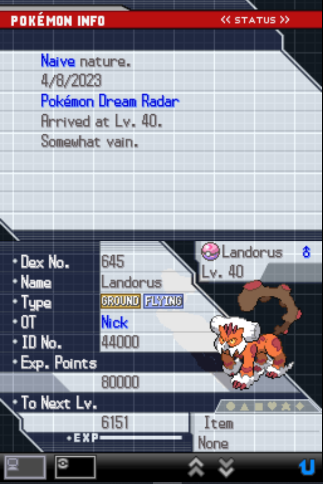 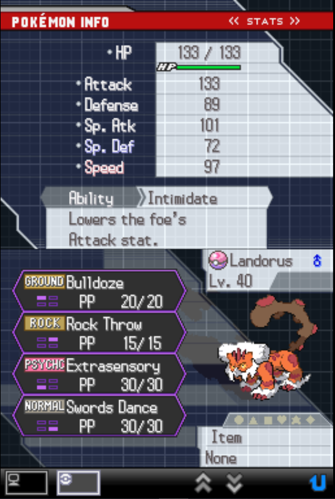 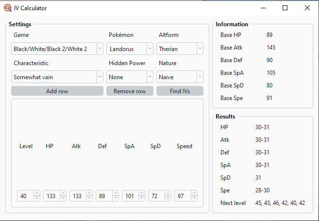As you can see I got it. If your Landorus’ Nature and IVs don’t match it would be very unfortunate as you only get 1 shot at this per Legendary per save file (you’d need to restart both your BW2 game and DR to get another shot at this). If that's the case you can still try to have a look at the Generator Tab to see whether you maybe advanced a few frames too much or a few frames too few. You’d need to put the Max Advances in the Generator a bit higher than your target advances and press generate again.
Troubleshooting
If you can’t seem to hit your target seed there is a way you can check what else you may have hit using PokéFinders Profile Calibrator. Open it up, go to the Needle Search tab and input all parameters like you did in your initial profile calibration but with a difference: instead of leaving the Timer0 range at the default put the Min Timer0 to the lowest you got -1 during your calibration and your Max Timer0 to the highest one you got +1. During my calibration I got 10E1, 10E2, 10E3, 10E4, 10E5, 10E6 and 10E7 so my range for this will be Min 10E0 and Max 10E8. You should also put the VCount and VFrame to the ones you know you hit thanks to your calibration and don’t forget to put your target date, time, seconds (seconds +/- 1) and keypresses into this.
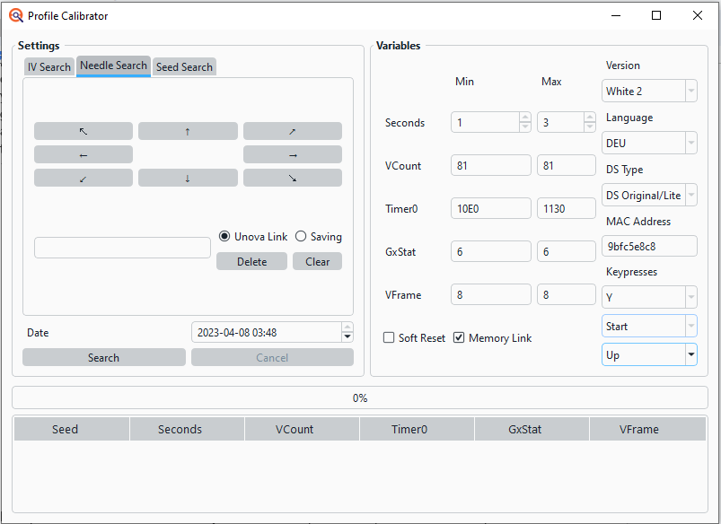Now put the first 4 needles of one of your failed attempts in here (I will use the example with → ↓ ↖ ↗ from earlier) and hit search.
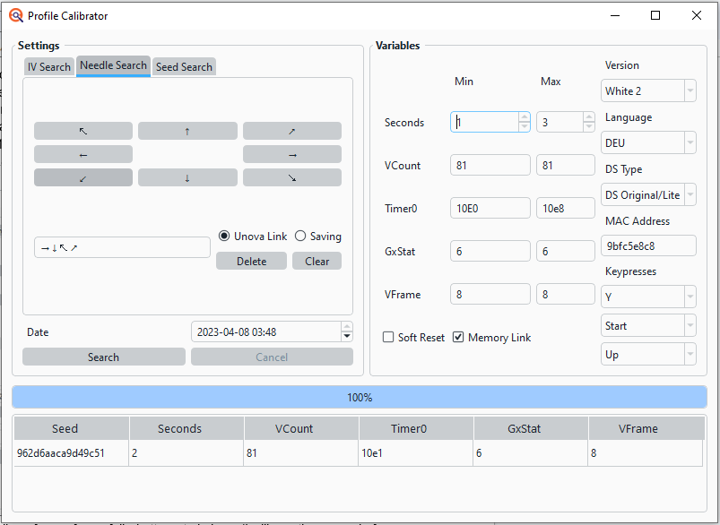If you get a result like I did (I hit the target seconds I wanted with 2 but got Timer0 10E1 instead of the target 10E2) that’s good and means you just got unlucky with the Timer0 or the seconds and should get it if you continue trying. If you keep hitting a second below your target for a majority of your attempts (like if I had hit second 1), increase your target seconds only in EonTimer by 1 and if you hit above your target, decrease the target seconds in EonTimer by 1. If you don’t get any results, something else is wrong. Double check whether you put your console to the correct date+time and see if you perhaps missed to subtract EonTimers “minutes before target”. Also check if all your buttons you need to press work properly (L and R specifically are prone to failure on ds consoles).
Notes and Conclusion
Hopefully you too now have a competitive Landorus with HP Ice, a cool Level 5 Lugia with perfect IVs or maybe just a strong Modest Ralts to play through the story with. If you spot any errors in this guide please do let us know. Farewell and have fun RNG manipulating!
If troubleshooting fails and you still have no idea what may be wrong, Blisy’s Discord server is full of helpful people that will try and assist you as best they can! Just head to the #bw_bw2 channel and describe your problem (preferably with screenshots of PokéFinder and EonTimer).
Author: NickPlayeZ#3004